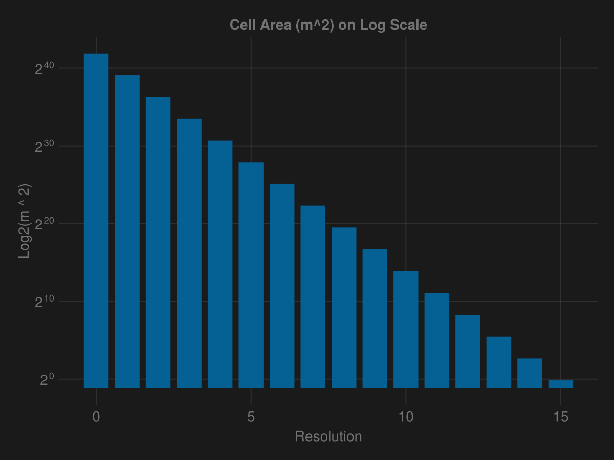
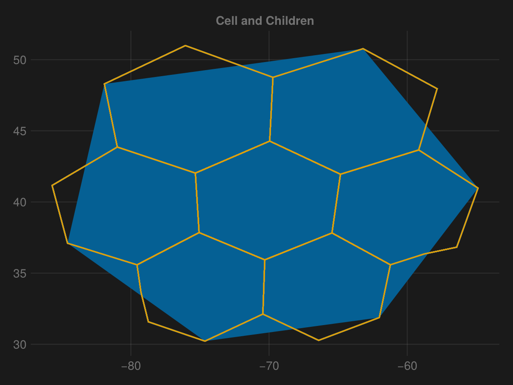
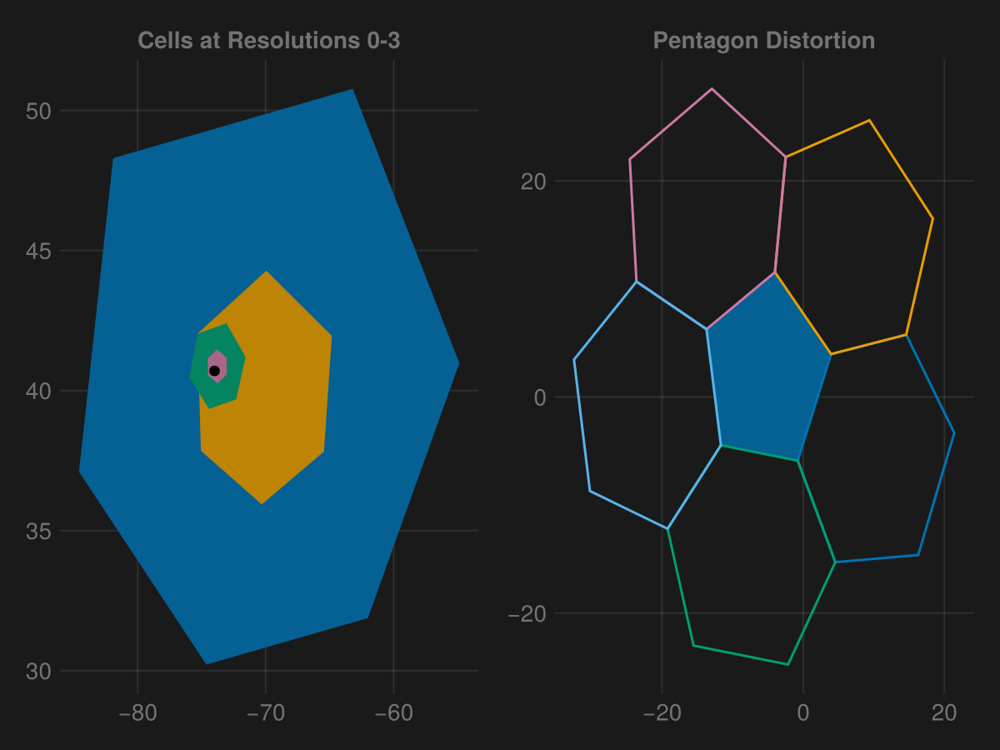

- H3 has 16 resolutions (0 - 15).
using HexEarth, CairoMakie, GeoMakie
import GeoInterface as GI
new_york = (-74, 40.7)
areas = [HexEarth.area(Cell(new_york, res)) for res in 0:15]
barplot(0:15, areas, axis=(; yscale=log2, ylabel="Log2(m ^ 2)", xlabel = "Resolution", title="Cell Area (m^2) on Log Scale"))
- Resolutions are a hierarchy, with parents having 7 children.
- Parent cells do not perfectly divide into its children cells.
o = Cell(new_york, 0)
fig = Figure()
ax = Axis(fig[1,1], title="Cell and Children")
poly!(ax, o)
for res in 0:15
lines!(ax, HexEarth.children(o))
end
fig
- Resolutions alternate rotating the grid back and forth by ~19.1°.
- These hexagonal grids are really only consistent over a face of an icosahedron (20-sided polyhedron).
- There will be some distortion at the boundaries of the icosahedron faces, specificially at the 12 points of the icosahedron, which are pentagons.
fig = Figure()
ax = Axis(fig[1,1], title="Cells at Resolutions 0-3")
for res in 0:3
poly!(ax, Cell(new_york, res))
end
scatter!(ax, new_york; color = :black)
ax2 = Axis(fig[1,2], title="Pentagon Distortion")
o = Cell((0,0), 0)
poly!(ax2, o)
lines!(ax2, Cell((0,-5), 0))
lines!(ax2, Cell((0, 10), 0))
lines!(ax2, Cell((-10, -10), 0))
lines!(ax2, Cell((-10, 10), 0))
lines!(ax2, Cell((-20, 0), 0))
fig
